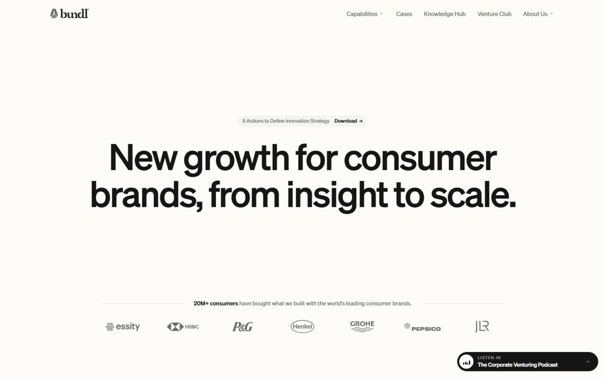
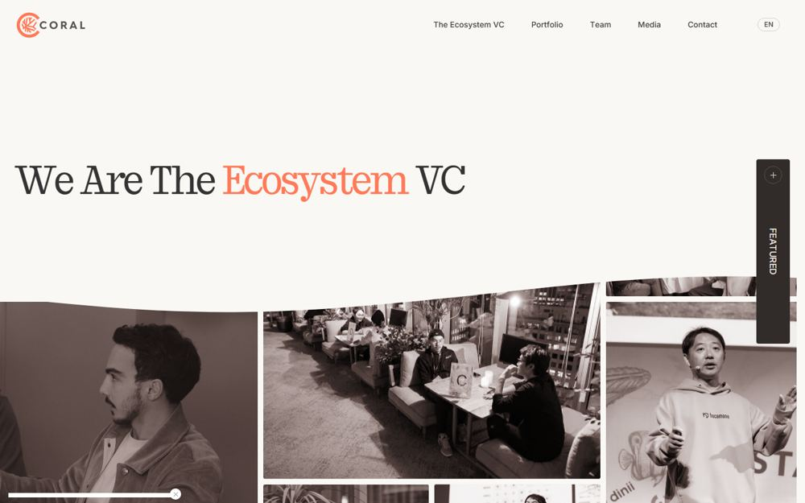
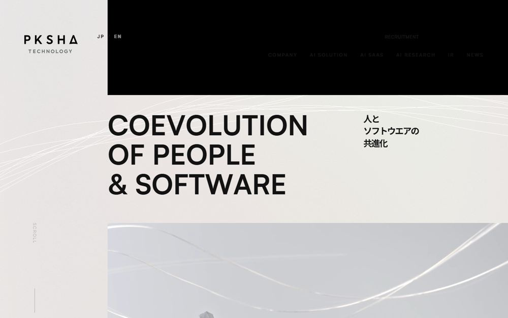
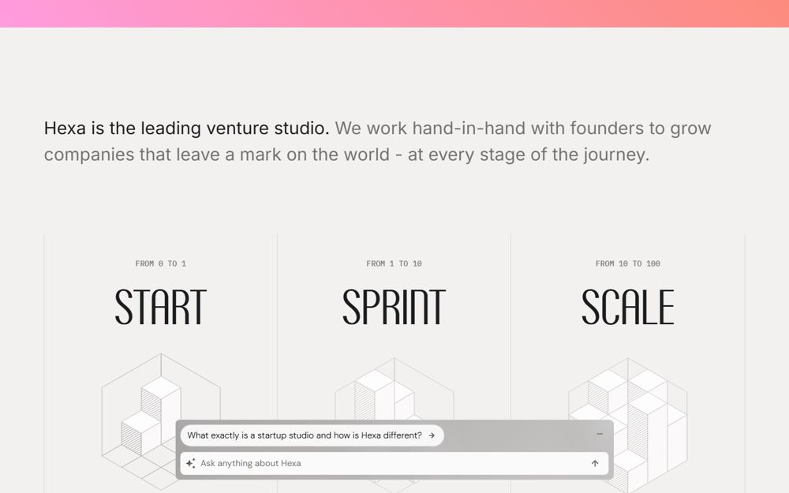
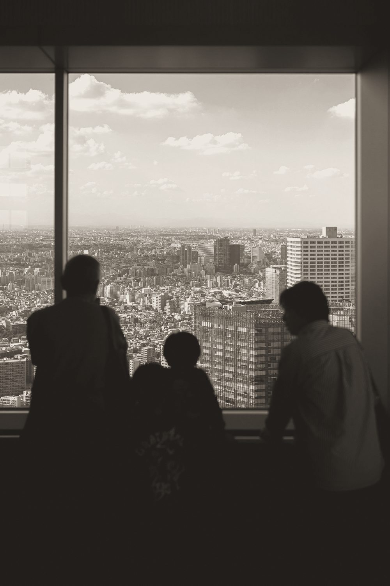
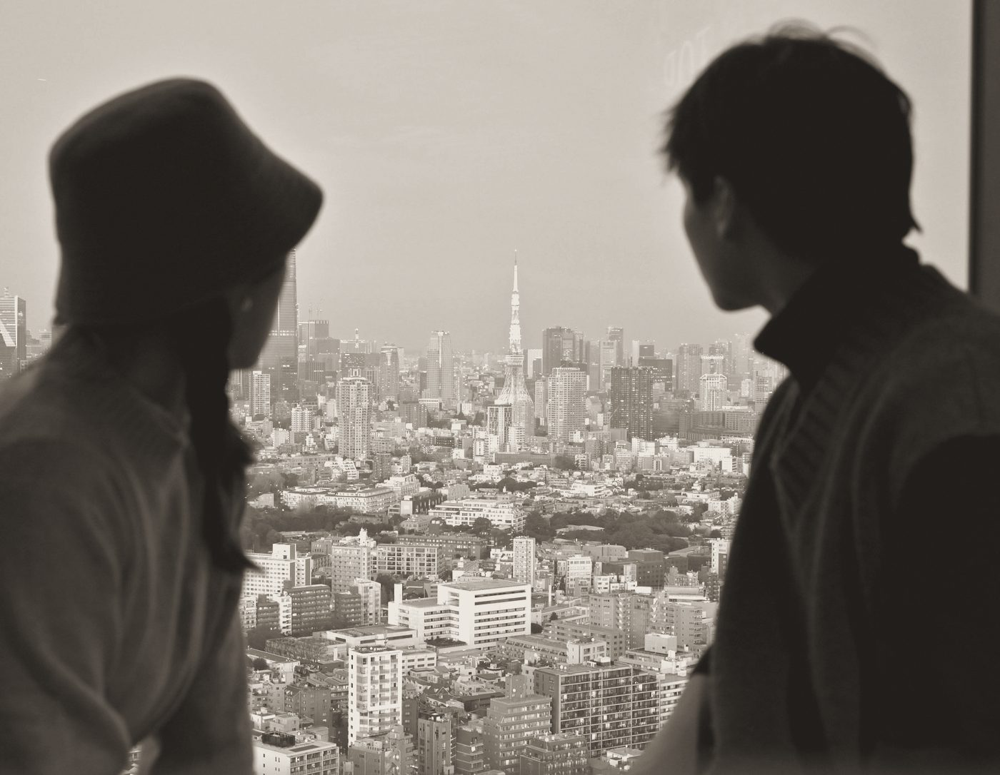
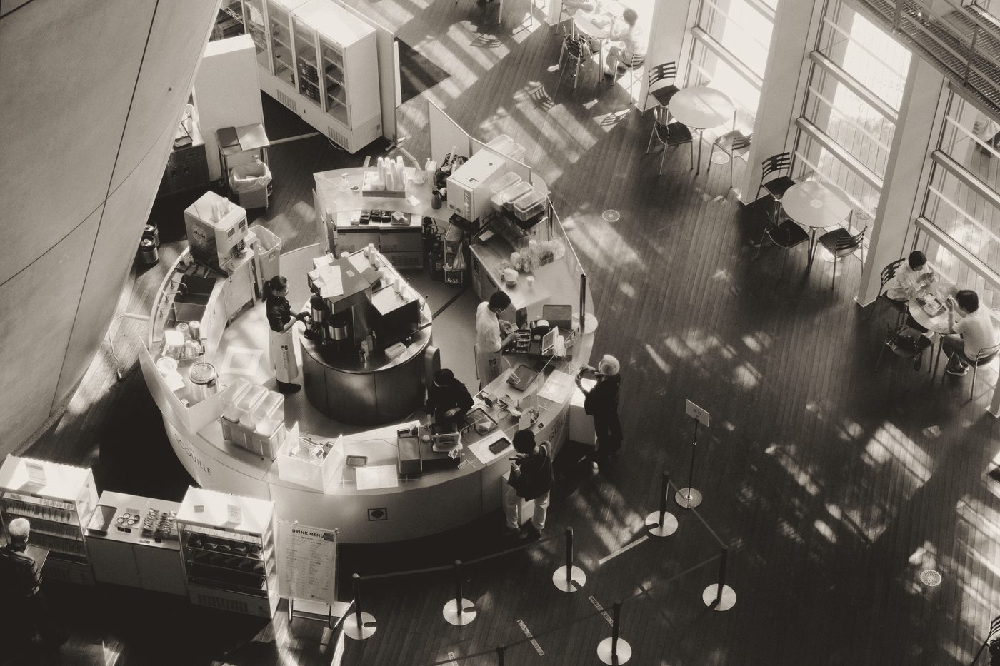
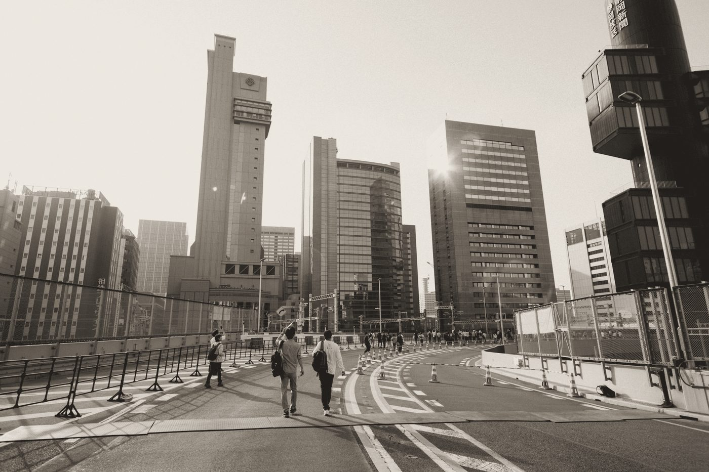

01
選んでいただいた4サイトに共通するのは、「個性のある文字」「そのサイトだけの絵」「精密な格子」「暖かい無彩色と1色」。
デザインの良し悪しはこの4サイトを物差しにします。制作の各段階で、同じ画面幅で撮影して並べ、見劣りしないかを確かめてから提出します。




02
撚り合わせる。ばらばらだった細い糸を、1本の強い縄にする。
大企業の新規事業は、戦略はコンサル、開発は開発会社、営業は代行会社と、依頼先が工程ごとに分かれ、つなぎ目で止まりがちです。JILは、戦略・検証・開発・営業・業務・組織の糸を、ひとつのチームに撚り合わせます。この考え方を「撚り合わさっていく細い線」として描き、ページの最初から最後まで通します。
Beforeばらばら
工程ごとに依頼先が分かれ、糸がそろわない
JIL撚る
JILが入り、糸が撚り合わさっていく
After1本の縄
ひとつのチームとして、強く前へ進む
03
精密で、誠実で、静かに熱い。
罫線の格子、等幅のラベル、揃った余白。考え抜かれた設計を感じさせる
誇張しない言葉と、加工しすぎない写真。数字は役員の経験だけを正直に出す
無彩色の中に1本だけ走る朱橙の線。現場で手を動かす熱を、控えめに見せる
04
紙と墨で9割。朱橙は「1本の線」と「押す場所」にだけ。
Paper 紙背景の基本。真っ白は使わない
Paper 2 紙・濃面の切り替え、土台の帯
Ink 墨文字、罫線（強）、後半の面
Signal 朱橙強調の線1本、ボタンの丸、現在地
Sub 灰補足の文字、ラベル（紙の上で6.3:1）
Mute 薄灰濃淡見出しの「淡」側（大きな文字専用）
Line 罫線格子・区切りの細線
Photo セピア影 #1E1B18 ／ 光 #F1ECE4
使用比率の目安 ／ Paper 62 ・ Paper2 10 ・ Ink 24 ・ Signal 1.5 ・ Gray 2.5
05
日本語は太く大きく詰める。英字は幾何学的に、ラベルは等幅で。
和文Google Fonts ／ 無料
戦略から、
現場の人まで。
Noto Sans JP 400／500／700。文字詰め（palt）を必ず有効にする
欧文・数字Fontshare ／ 商用無料
JIL 1,500
Satoshi 400／500／700／900。ロゴ・数字・英語の一言に
ラベルGoogle Fonts ／ 無料
STEP 01 ／ 0→1
FOUNDATION
IBM Plex Mono 400／500。工程・範囲など「情報のあるラベル」だけに使う
| 役割 | 書体 | PC | スマホ | 太さ | 行間 | 字間 | 使う場所 |
|---|---|---|---|---|---|---|---|
| Display | Noto Sans JP | 80px | 36px | 700 | 1.22 | -0.025em | キャッチ（濃淡2色） |
| H2 | Noto Sans JP | 64px | 32px | 700 | 1.2 | -0.025em | セクション見出し |
| Statement | Noto Sans JP | 38px | 22px | 500 | 1.6 | -0.01em | 立ち位置の一文（濃淡2色） |
| H3 | Noto Sans JP | 28px | 22px | 700 | 1.35 | -0.02em | ステップ名など |
| Number | Satoshi | 52px | 34px | 500 | 1.1 | -0.03em | 役員の経験の数字 |
| Body | Noto Sans JP | 15px | 15px | 400 | 1.9 | 0.02em | 本文 |
| Small | Noto Sans JP | 13px | 13px | 400 | 1.85 | 0.02em | 補足・表 |
| Label | IBM Plex Mono | 11px | 11px | 400 | 1.6 | 0.08em | 工程・範囲のラベル（大文字） |
和文の見出しは、言葉のまとまり（文節）ごとに改行を制御し、「現／場」のように言葉の途中で切れないようにする。1つの見出しは「言い切り（墨）」と「補足（薄灰）」の濃淡2色で組む。
06
12列・最大1280px。左3列に見出し、右9列に本文。
3 ＋ 9 ／ セクション見出し ＋ 本文（立ち位置・流れ・相談で共通）
| 項目 | PC（1200px〜） | タブレット（720px〜） | スマホ |
|---|---|---|---|
| 左右の余白 | 80px | 40px | 16px |
| 列の間隔 | 24px | 24px | 1列に積む |
| セクションの上下 | 160px | 120px | 88px |
| 余白の段階 | 8 ／ 16 ／ 24 ／ 40 ／ 56 ／ 80 ／ 104 ／ 160（この中からだけ選ぶ） | ||
07
線は飾りではなく、いま事業がどの状態かを描く。
線の太さは1px（強調の1本だけ1.6px・朱橙）。線の本数・広がり方で状態を表し、ゆっくり動く（動きを減らす設定の人には止めて表示）。
Hero ／ 撚り合わさる
Step 01 ／ 広がる
Step 02 ／ 絞り込む
Step 03 ／ 編み上げる
Step 04 ／ 分かれて進む
Foundation ／ 織る
08
東京で働く人の、後ろ姿とシルエット。すべてセピア寄りのモノクロにそろえる。




09
押す場所は、朱橙の丸で迷わせない。
| 部品 | ルール |
|---|---|
| 罫線の格子 | 上辺だけ墨（1px）、それ以外は罫線色。カードの角丸・影は使わない |
| ラベル | 等幅・大文字・11px。工程（STEP 01）、範囲（0→1）など情報がある時だけ |
| 数字 | Satoshi 500。単位は和文で小さく添える。会社の実績数字は使わず、役員の経験のみ |
| 写真の説明 | 写真の下に和文の一語（見渡す・見極める・つくる・動かす）と番号 |
| リンク | 下線＋右向き矢印。外部リンクは↗ |
10
紙の面で語り、墨の面で背中を押す。
11
| 素材 | 出典 | 条件 |
|---|---|---|
| Satoshi | Fontshare（Indian Type Foundry） | 商用無料（ITF Free Font License） |
| Noto Sans JP ／ IBM Plex Mono | Google Fonts | 商用無料（SIL Open Font License） |
| 写真（見渡す） | Unsplash ／ Ryunosuke Kikuno（Y_Kgw4QaYc8） | Unsplash License（商用無料） |
| 写真（見極める） | Unsplash ／ Gavin Li（vWB0PRBEtzY） | 同上 |
| 写真（つくる） | Unsplash ／ Leo Okuyama（T1lKNylbjp0） | 同上 |
| 写真（動かす） | Unsplash ／ Tsuyoshi Kozu（MDmGL-rgmBQ） | 同上 |
本番で有料素材や撮り下ろしに差し替える場合も、08の基準で選び、同じ加工をかける。